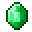

| Tipo | Descripción |
Logros
|
Los logros son una forma de orientar a los nuevos jugadores de Minecraft y proponer desafíos a completar. |
Bloques
|
Los bloques son las unidades básicas en la estructura de los mundos en Minecraft que pueden ser tanto colocados como destruidos dentro del este.
|
| Objetos |
Los objetos son objetos que solo existen dentro del inventario del jugador; es decir, no se pueden colocar directamente en el mundo.
|
| Biomas |
Los biomas son regiones en el mundo de Minecraft que se diferencian por características geográficas, flora, temperatura, altitud, nivel de humedad, color del cielo y color del follaje. Los biomas determinan distintos ecosistemasdentro de un mundo, como bosques, junglas, desiertos o llanuras, entre otros.
|
| Estructuras |
El mundo principal de Minecraft contiene gran cantidad de estructuras generadas automáticamente, con gran variedad de escalas y tamaños distintos.
|
Encantamiento
|
Un encantamiento es una función que se puede aplicar a armaduras, herramientas, armas (espadas, arcos y tridentes) o libros, cuya función es mejorar las habilidades existentes o añadir nuevas.
|
| Criaturas |
Las criaturas son afectadas de la misma manera que un jugador: ellos están expuesto a la física (gravedad), y pueden ser dañados por las mismas cosas que dañan al jugador. Algunas criaturas pueden ser resistentes a ciertos peligros, como las criaturas del Nether, que son inmunes al fuego. Las criaturas también pueden montar minecarts, y algunas otras pueden subir escaleras. Cuando las criaturas mueren, se convierten en polvo y sueltan objetos que pueden ser recursos útiles.
|
| Comercio  |
Las criaturas son afectadas de la misma manera que un jugador: ellos están expuesto a la física (gravedad), y pueden ser dañados por las mismas cosas que dañan al jugador. Algunas criaturas pueden ser resistentes a ciertos peligros, como las criaturas del Nether, que son inmunes al fuego. Las criaturas también pueden montar minecarts, y algunas otras pueden subir escaleras. Cuando las criaturas mueren, se convierten en polvo y sueltan objetos que pueden ser recursos útiles.
|
| Circuitos de redstone |
Un circuito de redstone es una estructura que sirve para activar o controlar mecanismos.
|